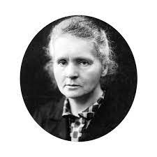

Mulheres na Ciência

Marie Curie
Capítulo 1
Bibliografia
- Nome: MariMaria Salomea Skłodowska
- Nascimento: 7 de novembro de 1867
Varsóvia, Reino da Polônia, Império Russo (hoje voivodia de Mazóvia)
- Falecimento: 4 de julho de 1934 (66 anos)
Passy, Alta Saboia, França
- Residênccia: Reino da Polônia, França
- Nacionalidade: polonesa, francesa
- Cônjuge: Pierre Curie (1895-1906)
- Filho (a)(s): Irène Joliot-Curie e Ève Curie
- Ocupação
Capítulo 2
Principais trabalhos
- Radioatividade
- Polônio
- Rádio
Capítulo 3
Prêmios
Nobel de Física (1903)
Medalha Davy (1903)
Medalha Matteucci (1904),
Medalha Elliott Cresson (1909)
Cresson (1909)
Nobel de Química (1911)
Você também pode acessar
Clique Aqui
Ir para a próxima página